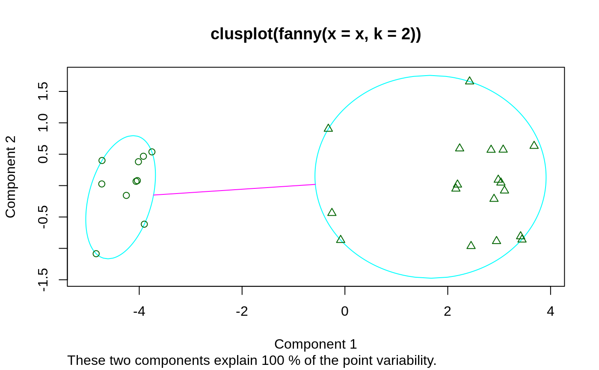
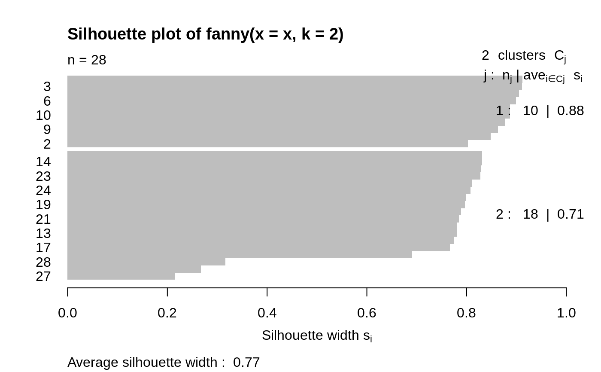
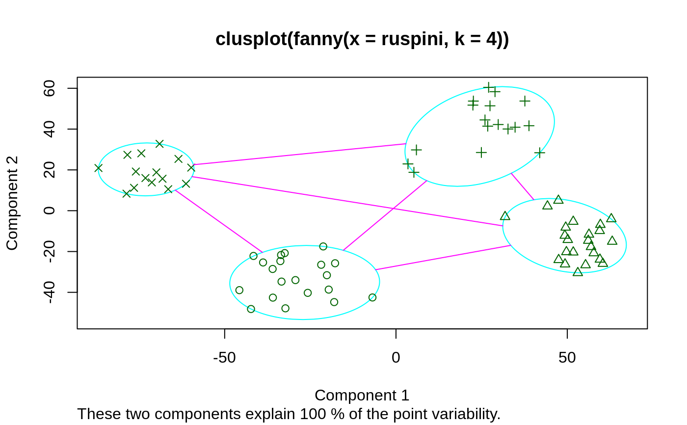
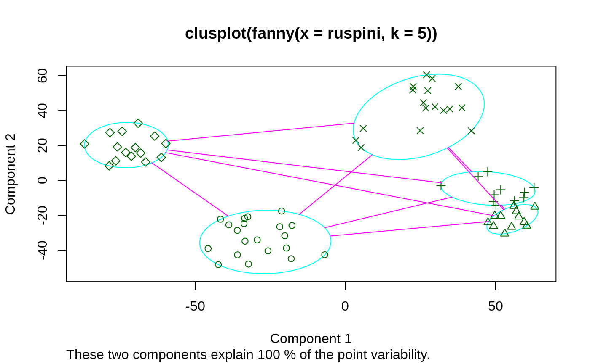
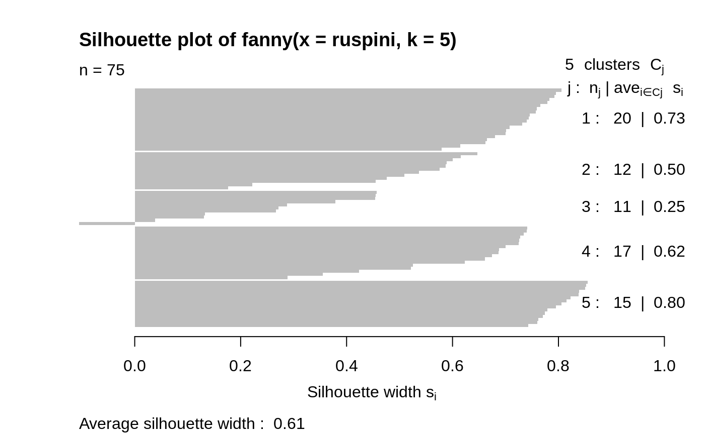

fanny.RdComputes a fuzzy clustering of the data into k clusters.
fanny(x, k, diss = inherits(x, "dist"), memb.exp = 2, metric = c("euclidean", "manhattan", "SqEuclidean"), stand = FALSE, iniMem.p = NULL, cluster.only = FALSE, keep.diss = !diss && !cluster.only && n < 100, keep.data = !diss && !cluster.only, maxit = 500, tol = 1e-15, trace.lev = 0)
| x | data matrix or data frame, or dissimilarity matrix, depending on the
value of the In case of a matrix or data frame, each row corresponds to an observation, and each column corresponds to a variable. All variables must be numeric. Missing values (NAs) are allowed. In case of a dissimilarity matrix, |
|---|---|
| k | integer giving the desired number of clusters. It is required that \(0 < k < n/2\) where \(n\) is the number of observations. |
| diss | logical flag: if TRUE (default for |
| memb.exp | number \(r\) strictly larger than 1 specifying the
membership exponent used in the fit criterion; see the
‘Details’ below. Default: |
| metric | character string specifying the metric to be used for
calculating dissimilarities between observations. Options are
|
| stand | logical; if true, the measurements in |
| iniMem.p | numeric \(n \times k\) matrix or |
| cluster.only | logical; if true, no silhouette information will be computed and returned, see details. |
| keep.diss, keep.data | logicals indicating if the dissimilarities
and/or input data |
| maxit, tol | maximal number of iterations and default tolerance
for convergence (relative convergence of the fit criterion) for the
FANNY algorithm. The defaults |
| trace.lev | integer specifying a trace level for printing
diagnostics during the C-internal algorithm.
Default |
an object of class "fanny" representing the clustering.
See fanny.object for details.
In a fuzzy clustering, each observation is “spread out” over the various clusters. Denote by \(u_{iv}\) the membership of observation \(i\) to cluster \(v\).
The memberships are nonnegative, and for a fixed observation i they sum to 1.
The particular method fanny stems from chapter 4 of
Kaufman and Rousseeuw (1990) (see the references in
daisy) and has been extended by Martin Maechler to allow
user specified memb.exp, iniMem.p, maxit,
tol, etc.
Fanny aims to minimize the objective function
$$\sum_{v=1}^k
\frac{\sum_{i=1}^n\sum_{j=1}^n u_{iv}^r u_{jv}^r d(i,j)}{
2 \sum_{j=1}^n u_{jv}^r}$$
where \(n\) is the number of observations, \(k\) is the number of
clusters, \(r\) is the membership exponent memb.exp and
\(d(i,j)\) is the dissimilarity between observations \(i\) and \(j\).
Note that \(r \to 1\) gives increasingly crisper
clusterings whereas \(r \to \infty\) leads to complete
fuzzyness. K&R(1990), p.191 note that values too close to 1 can lead
to slow convergence. Further note that even the default, \(r = 2\)
can lead to complete fuzzyness, i.e., memberships \(u_{iv} \equiv
1/k\). In that case a warning is signalled and the
user is advised to chose a smaller memb.exp (\(=r\)).
Compared to other fuzzy clustering methods, fanny has the following
features: (a) it also accepts a dissimilarity matrix; (b) it is
more robust to the spherical cluster assumption; (c) it provides
a novel graphical display, the silhouette plot (see
plot.partition).
agnes for background and references;
fanny.object, partition.object,
plot.partition, daisy, dist.
## generate 10+15 objects in two clusters, plus 3 objects lying ## between those clusters. x <- rbind(cbind(rnorm(10, 0, 0.5), rnorm(10, 0, 0.5)), cbind(rnorm(15, 5, 0.5), rnorm(15, 5, 0.5)), cbind(rnorm( 3,3.2,0.5), rnorm( 3,3.2,0.5))) fannyx <- fanny(x, 2) ## Note that observations 26:28 are "fuzzy" (closer to # 2): fannyx#> Fuzzy Clustering object of class 'fanny' : #> m.ship.expon. 2 #> objective 14.80898 #> tolerance 1e-15 #> iterations 10 #> converged 1 #> maxit 500 #> n 28 #> Membership coefficients (in %, rounded): #> [,1] [,2] #> [1,] 93 7 #> [2,] 87 13 #> [3,] 97 3 #> [4,] 92 8 #> [5,] 97 3 #> [6,] 96 4 #> [7,] 96 4 #> [8,] 94 6 #> [9,] 94 6 #> [10,] 96 4 #> [11,] 6 94 #> [12,] 8 92 #> [13,] 9 91 #> [14,] 4 96 #> [15,] 17 83 #> [16,] 9 91 #> [17,] 10 90 #> [18,] 10 90 #> [19,] 7 93 #> [20,] 7 93 #> [21,] 9 91 #> [22,] 4 96 #> [23,] 4 96 #> [24,] 6 94 #> [25,] 4 96 #> [26,] 42 58 #> [27,] 44 56 #> [28,] 40 60 #> Fuzzyness coefficients: #> dunn_coeff normalized #> 0.8369661 0.6739321 #> Closest hard clustering: #> [1] 1 1 1 1 1 1 1 1 1 1 2 2 2 2 2 2 2 2 2 2 2 2 2 2 2 2 2 2 #> #> Available components: #> [1] "membership" "coeff" "memb.exp" "clustering" "k.crisp" #> [6] "objective" "convergence" "diss" "call" "silinfo" #> [11] "data"summary(fannyx)#> Fuzzy Clustering object of class 'fanny' : #> m.ship.expon. 2 #> objective 14.80898 #> tolerance 1e-15 #> iterations 10 #> converged 1 #> maxit 500 #> n 28 #> Membership coefficients (in %, rounded): #> [,1] [,2] #> [1,] 93 7 #> [2,] 87 13 #> [3,] 97 3 #> [4,] 92 8 #> [5,] 97 3 #> [6,] 96 4 #> [7,] 96 4 #> [8,] 94 6 #> [9,] 94 6 #> [10,] 96 4 #> [11,] 6 94 #> [12,] 8 92 #> [13,] 9 91 #> [14,] 4 96 #> [15,] 17 83 #> [16,] 9 91 #> [17,] 10 90 #> [18,] 10 90 #> [19,] 7 93 #> [20,] 7 93 #> [21,] 9 91 #> [22,] 4 96 #> [23,] 4 96 #> [24,] 6 94 #> [25,] 4 96 #> [26,] 42 58 #> [27,] 44 56 #> [28,] 40 60 #> Fuzzyness coefficients: #> dunn_coeff normalized #> 0.8369661 0.6739321 #> Closest hard clustering: #> [1] 1 1 1 1 1 1 1 1 1 1 2 2 2 2 2 2 2 2 2 2 2 2 2 2 2 2 2 2 #> #> Silhouette plot information: #> cluster neighbor sil_width #> 5 1 2 0.9117825 #> 3 1 2 0.9107217 #> 7 1 2 0.9050591 #> 6 1 2 0.8991185 #> 8 1 2 0.8871024 #> 10 1 2 0.8865216 #> 1 1 2 0.8768016 #> 9 1 2 0.8625442 #> 4 1 2 0.8482994 #> 2 1 2 0.8023587 #> 25 2 1 0.8308391 #> 14 2 1 0.8305975 #> 22 2 1 0.8280789 #> 23 2 1 0.8279323 #> 11 2 1 0.8099786 #> 24 2 1 0.8078488 #> 20 2 1 0.7995021 #> 19 2 1 0.7963906 #> 12 2 1 0.7885586 #> 21 2 1 0.7849212 #> 16 2 1 0.7812539 #> 13 2 1 0.7800939 #> 18 2 1 0.7747029 #> 17 2 1 0.7665576 #> 15 2 1 0.6905141 #> 28 2 1 0.3164643 #> 26 2 1 0.2670210 #> 27 2 1 0.2156234 #> Average silhouette width per cluster: #> [1] 0.8790310 0.7053822 #> Average silhouette width of total data set: #> [1] 0.7673996 #> #> 378 dissimilarities, summarized : #> Min. 1st Qu. Median Mean 3rd Qu. Max. #> 0.02755 1.08260 3.54300 3.95240 6.92420 8.68850 #> Metric : euclidean #> Number of objects : 28 #> #> Available components: #> [1] "membership" "coeff" "memb.exp" "clustering" "k.crisp" #> [6] "objective" "convergence" "diss" "call" "silinfo" #> [11] "data"plot(fannyx)(fan.x.15 <- fanny(x, 2, memb.exp = 1.5)) # 'crispier' for obs. 26:28#> Fuzzy Clustering object of class 'fanny' : #> m.ship.expon. 1.5 #> objective 17.35879 #> tolerance 1e-15 #> iterations 13 #> converged 1 #> maxit 500 #> n 28 #> Membership coefficients (in %, rounded): #> [,1] [,2] #> [1,] 100 0 #> [2,] 98 2 #> [3,] 100 0 #> [4,] 99 1 #> [5,] 100 0 #> [6,] 100 0 #> [7,] 100 0 #> [8,] 100 0 #> [9,] 100 0 #> [10,] 100 0 #> [11,] 0 100 #> [12,] 1 99 #> [13,] 1 99 #> [14,] 0 100 #> [15,] 4 96 #> [16,] 1 99 #> [17,] 1 99 #> [18,] 1 99 #> [19,] 1 99 #> [20,] 0 100 #> [21,] 1 99 #> [22,] 0 100 #> [23,] 0 100 #> [24,] 0 100 #> [25,] 0 100 #> [26,] 31 69 #> [27,] 34 66 #> [28,] 27 73 #> Fuzzyness coefficients: #> dunn_coeff normalized #> 0.9424596 0.8849192 #> Closest hard clustering: #> [1] 1 1 1 1 1 1 1 1 1 1 2 2 2 2 2 2 2 2 2 2 2 2 2 2 2 2 2 2 #> #> Available components: #> [1] "membership" "coeff" "memb.exp" "clustering" "k.crisp" #> [6] "objective" "convergence" "diss" "call" "silinfo" #> [11] "data"(fanny(x, 2, memb.exp = 3)) # more fuzzy in general#> Fuzzy Clustering object of class 'fanny' : #> m.ship.expon. 3 #> objective 9.026255 #> tolerance 1e-15 #> iterations 11 #> converged 1 #> maxit 500 #> n 28 #> Membership coefficients (in %, rounded): #> [,1] [,2] #> [1,] 79 21 #> [2,] 72 28 #> [3,] 86 14 #> [4,] 77 23 #> [5,] 86 14 #> [6,] 84 16 #> [7,] 83 17 #> [8,] 80 20 #> [9,] 80 20 #> [10,] 82 18 #> [11,] 20 80 #> [12,] 23 77 #> [13,] 25 75 #> [14,] 16 84 #> [15,] 32 68 #> [16,] 24 76 #> [17,] 26 74 #> [18,] 25 75 #> [19,] 22 78 #> [20,] 22 78 #> [21,] 24 76 #> [22,] 17 83 #> [23,] 17 83 #> [24,] 21 79 #> [25,] 16 84 #> [26,] 47 53 #> [27,] 48 52 #> [28,] 46 54 #> Fuzzyness coefficients: #> dunn_coeff normalized #> 0.6560406 0.3120813 #> Closest hard clustering: #> [1] 1 1 1 1 1 1 1 1 1 1 2 2 2 2 2 2 2 2 2 2 2 2 2 2 2 2 2 2 #> #> Available components: #> [1] "membership" "coeff" "memb.exp" "clustering" "k.crisp" #> [6] "objective" "convergence" "diss" "call" "silinfo" #> [11] "data"data(ruspini) f4 <- fanny(ruspini, 4) stopifnot(rle(f4$clustering)$lengths == c(20,23,17,15)) plot(f4, which = 1)